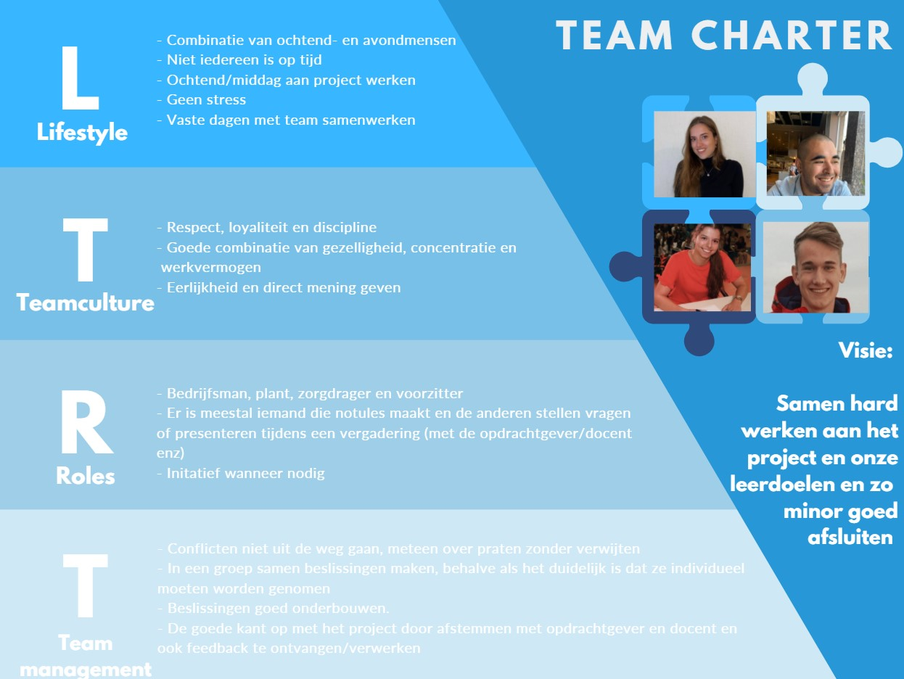
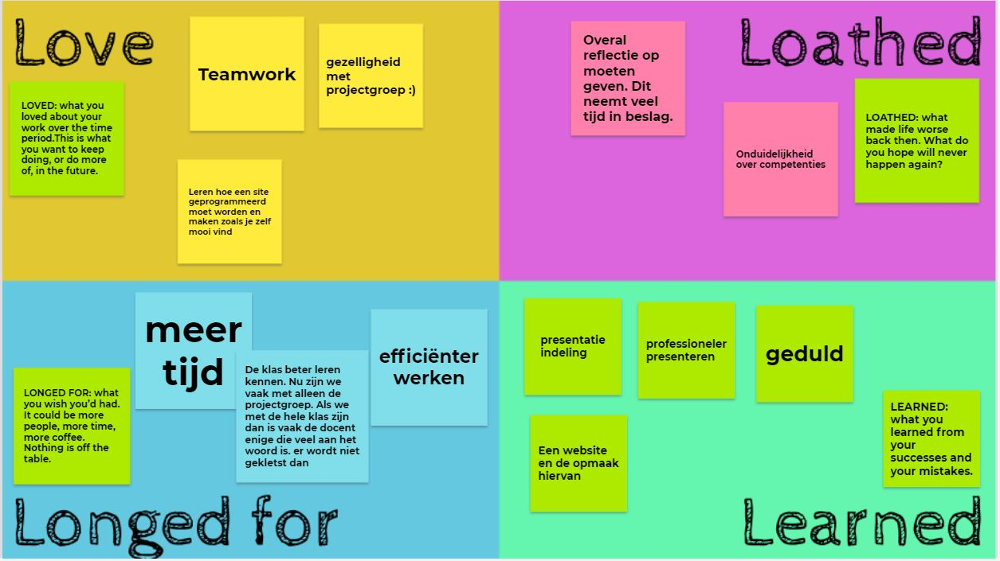

Intervisie sessies
Op deze pagina staat materiaal wat ik en mijn projectgroep hebben gemaakt tijdens intervisie/pitstop sessies en ook wat we hebben besproken tijdens die sessies.
Team Charter
Tijdens de intervisie was het de bedoeling dat we een Team Charter in elkaar gingen zetten voor onszelf en ook voor ons samen als projectgroep. Deze is hieronder weergegeven.

We hebben vaste dagen waar we dus op werken en als het iemand niet lukt om erbij te zijn praten we diegene de eerstvolgende dag bij.
We weten van elkaar wat voor rollen we in de projectgroep hebben en dit is ook prettig, omdat we zo makkelijk werk kunnen verdelen en ook weten we zo wat we aan elkaar hebben.
Daarnaast kunnen we elkaar motiveren en spreken we vaker af om samen te werken aan het project of onze portfolio's.
{kind=link}
4 L's
Tijdens de intervisie moesten we samen met onze projectgroep aan de slag om 4 keer de L in te vullen. We kwamen uit op het volgende resultaat:

Kleurenprofiel
Tijdens de laatste intervisie bijeenkomst ging het vooral over de Caluwé test die we al een aantal keren hebben moeten doen. Nu moesten we als projectgroep in gesprek gaan over de kleuren die er bij ons uit de test kwamen en ook welke kleur onze opdrachtgever waarschijnlijk heeft.
Zoals hieronder te zien is hebben Sjoerd en Sanne beide rood en Jorg groen en ikzelf blauw.
Ik herken dit wel in mezelf, aangezien ik op schoolgebied een rationele denker ben en kijk naar wat logischerwijs werkt. Innovatief te werk gaan en plannen zijn voor mij ook erg belangrijk.

Promo filmpje
De laatste pitstop stond vooral in het teken van bespreken van de afronding van het project. We gingen daarna aan de slag met het maken van een promotiefilmpje voor de minor en het project waar we mee bezig zijn geweest. We besloten onze robotarm hierin te verwerken, met een kort fragment van de Digital Twin die QING heeft gemaakt voor de Van Loon Vleesfabriek. Daarnaast hebben we Sjoerd achtergrondinformatie laten inspreken, hij kan dit namelijk heel enthousiast overbrengen in een korte tijd. Het resultaat is hieronder te zien.